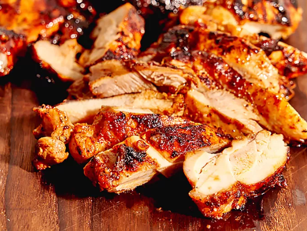

Copy Chipotle Chicken

Description
This copycat Chipotle chicken begins with a flavorful chipotle marinade, then is seared in a skillet and finished in the oven.
Ingredients
- 2 pounds skinless, boneless chicken thighs
- 3 cloves garlic, minced
- 2 chipotle peppers plus 2 tablespoons adobo sauce (from 1 can chipotles in adobo)
- 3 tablespoons olive oil, plus more for cooking
- 1 teaspoon ground cumin
- 2 tablespoons white vinegar
- 1 1/2 teaspoons kosher salt
- 1/2 teaspoon freshly ground black pepper
- 1 tablespoon honey
Steps
- Combine chicken, garlic, chipotle peppers, adobo sauce, 3 tablespoons olive oil, cumin, white vinegar, salt, pepper, and honey in a
large resealable bag. Seal bag and toss to coat thoroughly. Refrigerate at least 4 hours and up to overnight.
- Preheat the oven to 350 degrees F (175 degrees C).
- Heat a large cast iron skillet over medium-high heat. Add a little oil if necessary. Add chicken in one layer to skillet and cook,
undisturbed, until chicken is deep golden brown and releases easily from the skillet, 5 to 7 minutes.
- Flip chicken and transfer to the preheated oven until chicken is no longer pink at the center and juices run clear, about 20 minutes.
An instant-read thermometer inserted near the center should read 165 degrees F (74 degrees C). Let chicken rest 10 minutes before
cutting.
Nutrition Facts
Per serving: calories 327; total fat 19g; saturated fat 5g; cholesterol 184mg; sodium 584mg; total carbohydrate 5g; dietary fiber 1g;
total sugars 3g; protein 37g; vitamin c 1mg; calcium 26mg; iron 2mg; potassium 445mg